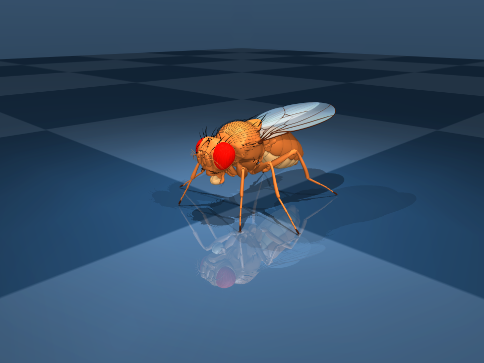
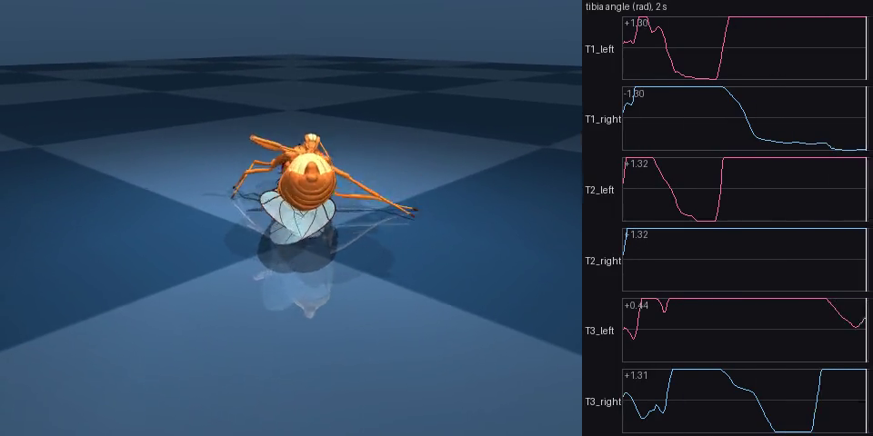

the whole fly
A nervous system, a body, and no controller
The connectome — 165,122 neurons of the Janelia male CNS, brain and ventral nerve cord — wired to the open-source MuJoCo fly body of Vaxenburg et al., Nature 2025 (Janelia and Google DeepMind). Between them a fixed arithmetic: the firing rate of a pool of motor neurons becomes a joint torque, a joint angle or a foot load becomes a proprioceptor's firing rate. Nothing written by anyone decides how it moves. Either the wiring moves the body or it does not, and either answer is reported with its numbers.
00
Motor map708 motor neurons in the nerve cord, 381 of them leg; 328 of the 381 (86.1 %) carry a named muscle and joint. Read from the annotations, nothing edited.
done
01
Cord rhythmUnder two descending neurons at 150 Hz the cord ignites into a 45.5 Hz oscillation on every seed; scrambled wiring does the same; left and right never alternate. No walking rhythm.
failed
02
Open loopMotor-neuron rates become joint torque on the MuJoCo fly: 66 leg joints, 48 leg actuators, standing on five of six claws. Not run until a cord protocol passes; one smoke trial only, below.
built, not run
03
Proprioceptive loopThe body's joint angles and foot loads become the cord's proprioceptor drive. Built and tested on fakes; runs only after stage 2 stands.
built, not run
stage 1 · the cord rhythm test
The cord ignites; it does not step
Eighteen simulations of 1.7 s of brain time on the stock model, no gains: DNa01 and DNa02 on both sides at 150 Hz for 1.5 s after a 0.2 s silent warm-up (DRIVE), the same with no drive (BASELINE), and the same drive on a cord whose synaptic targets are permuted with every degree preserved (SCRAMBLED), six seeds each. The pass rule was fixed before the data existed. It failed.
STAGE 1 · CORD RHYTHM
DNa01 + DNa02 · 150 HZ · STOCK WIRING, NO GAINS
DRIVE
BASELINE
SCRAMBLED
6 SEEDS EACH
RUN ONCE · 2026-09-13
● PASS = FALSE
Dominant oscillation, drive and scrambled
45.5 Hz
22 MS PERIOD · EVERY DRIVE SEED, EVERY SCRAMBLED SEED
Verdicts · measured against required
M1 band peak, drive seeds
6 / 6 NEED 5
M2 left-right anti-phase
0 / 3 NEED 2
M4 scrambled fails M1
1 / 6 NEED 5
M4 baseline fails M1
6 / 6 NEED 6
The M1 peak at 11.4 Hz is the fourth harmonic of the 45.5 Hz oscillation on all 6 DRIVE seeds. M2 and M4 fail; PASS is false.
What the cord did under drive
VNC neurons firing
35–44 %
leg motor neurons, mean
80.7 Hz
DNa01 / DNa02, driven at 150
352 / 426 Hz
whole CNS
8.4–10.0 M spikes/s
Scrambled wiring, same drive
leg motor neurons, mean
288 Hz
Reading, from the README. Under DNa01 + DNa02 drive at 150 Hz this LIF cord does not produce a walking rhythm. It produces a runaway, synchronous, bilaterally in-phase population oscillation that a degree-preserving scramble of the cord's wiring reproduces just as well, so nothing here is attributable to the measured connectivity. It is not a finding about the animal's cord: what was tested is two descending neurons the literature calls steering neurons, at a rate taken from another simulation, in a model with the limits listed further down.
the body · one smoke trial
A body that is wired up, and one trial that only proves the wires
The MuJoCo fly, inventoried from its compiled model: 66 leg joints, 48 leg actuators, six claw adhesions, no muscle model anywhere. At rest it stands on five of its six claws, thorax 0.132 cm above the floor. Stage 2 has not been run. What exists is one end-to-end smoke trial — DRIVE, seed 0, two seconds, the GPU brain and the real body — run to see that brain, coupling, body and scorer connect. It is a smoke test, not a result.
THE BODY · SMOKE
FLYBODY · MUJOCO 3.13.0 · FORCE MODE, K = 1
DRIVE, SEED 0
NODRIVE
SCRAMBLED
2 S · 100 FRAMES
● NOT A RESULT
a smoke test, not a result
What happened in two seconds
below 70 % of its height
0.06 s
Thrown over at 0.06 s with the measured joint signs (|roll| to 3.14 rad); the first smoke, with a placeholder sign on every joint, folded at 0.22 s. Minimum height 0.044 cm both times.
The body, read from the model
claws on the floor at rest
5 of 6
Not computed
NODRIVE and SCRAMBLED were not run, S4 and the stage-2 pass rule were not computed, and nothing is concluded. For comparison, the same body with every control at zero stands 1.76 s and settles at 0.078 cm.
The standing pose, rendered once · build/first_render.png

Last frame of the smoke · build/smoke/frame_last.png

Scored with the preregistered code and nothing tuned. The mapped leg motor neurons averaged 89 Hz; the brain is open loop, so its rates are the same to the bit between the two smokes and only the sign of the coupling differs. The sign is right and the fly still does not stand under this drive at K = 1; that is what the smoke shows, and it is reported, not hidden. The 0 / 6 for cycling is the implemented rule; the bare written rule reads 5 / 6 here and 6 / 6 on a body with every control at zero, because one swing from limit to limit looks periodic to it. That disagreement is logged, not tuned.
day two
Two more tests, and neither got past the cord
Both were preregistered before their first simulation and run once, with no constant changed afterwards. The full record is docs/day2.md. Unlike earlier results, these two had not been through the full adversarial review when they were published, and the record says so.
a
A second cord protocolMeasured fly neuron properties, added one at a time. A 1.4 ms synaptic delay (Jeanne & Wilson 2015) moved the runaway from 45.5 Hz to 125 Hz instead of making a rhythm. Short-term depression fitted at a fly synapse (Nagel, Hong & Wilson 2015) stopped the runaway and nearly silenced the cord. Driving through DNg100 or DNb08, the descending neurons Pugliese et al. 2025 used, ignited the same 45.5 Hz oscillation. Adaptation was left out because no measurement in adult fly central neurons could be cited. Pass is false in all six blocks.
failed
b
A leg-reflex test312 trials bending a knee 18 degrees on the body and reading that knee’s motor neurons. Driving one leg’s proprioceptors at their resting rate already puts 15 to 18 percent of the nerve cord into firing, before any push. Where every proprioceptor was driven, bending the knee shifted the body’s weight onto the other legs and swamped the knee signal. No reflex sign appeared in any case.
not evaluable
c
Next: replicate the one published cord rhythmPugliese et al. 2025 reported alternation within a leg from a connectome cord, using a delay and a synaptic decay together. This project has tested neither the decay nor the two combined. Designed, not yet run.
next
what is measured and what is chosen
Two lists, kept apart
Each module's docstring separates the two; this is the short form of the README's summary.
- Measured. The wiring and its signs, as released. A motor neuron's class, side, neuromere and exit nerve, from the annotation columns. The body's inventory, read from the compiled model. The simulator's ceiling rate, 454.5 Hz.
- Chosen. Which joint a named muscle moves and whether it reads as flexor or extensor, from the published nomenclature. The drive: DNa01 and DNa02, the cells the roamer had mapped to forward walking and the literature reports as steering neurons, at 150 Hz, a rate from another simulation and not a measured one. The scramble that keeps every degree and loses who talks to whom. The metrics and the pass rule, fixed before any data existed. The coupling arithmetic that turns a pool's rate into a torque, and the map from joint angle and foot load to proprioceptor rate.
- Not possible from the annotations. A muscle for the 53 coded or untyped leg motor neurons; the sub-populations of the femoral chordotonal organ beyond the cells whose synonyms name them.
what the model is not
Any one of these could make or abolish a rhythm
None of them is the measured connectivity. From the README; the result file carries the same list, and a test holds it to the code that built the graph and the simulator.
- Uniform synapses. Every synapse has the same strength, 0.275 mV, so a connection's weight is its sign times its synapse count. Pairs with fewer than 3 synapses are dropped.
- Signs from a prediction. Acetylcholine excites; GABA, glutamate and histamine inhibit, glutamate everywhere, the cord included. Dopamine, octopamine, serotonin, unclear and unknown get zero weight, so there is no neuromodulation at all. No gap junctions.
- Identical neurons. One leaky integrate-and-fire parameter set for all 165,122: rest −52 mV, threshold −45 mV, reset −52 mV, membrane time constant 20 ms, refractory 2.2 ms, step 0.2 ms. Set by Shiu et al. 2024 for the FlyWire female brain; nobody has fitted them to a nerve cord.
- No delays, no adaptation, no synaptic decay. Shiu et al. 2024 list a 1.8 ms delay and a 5 ms synaptic decay in their methods; this simulator omits both. The second cord protocol added a measured delay and measured depression one at a time, and neither produced a rhythm.
- A body with no muscles. Joint torque is a linear actuator with no length-tension or force-velocity curve, and every motor neuron in a pool counts the same, although fast and slow motor neurons differ by an order of magnitude in the animal.
the repositories
The code, the results and every number on this page: the motor map, the cord test's result file and figure, the body inventory, the smoke trial and its README.
The brain: the graph build of the connectome, the simulator and its GPU port, and everything the fly did before this.
{kind=link}